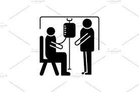
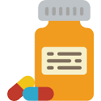
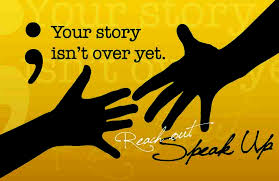
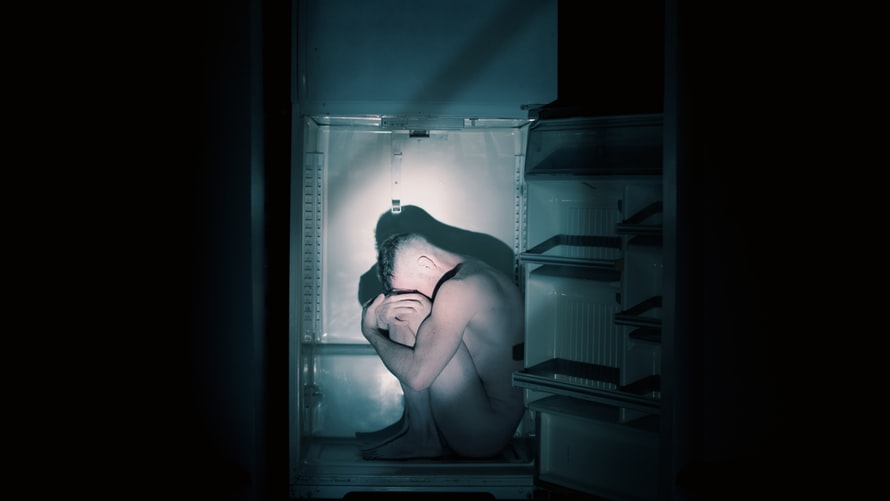
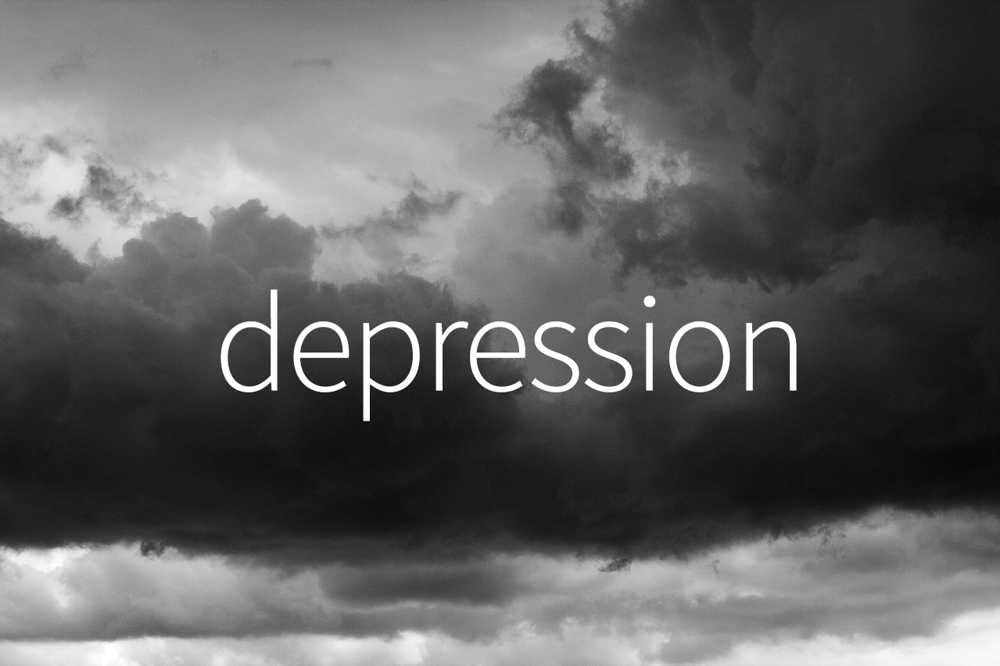

-
Home
OUR SERVICES
TREATMENT AND RECOMMENDATIONS FOR OVERCOMING DEPRESSION 
Lets review the types of depression
They are as follows;
- Major Depression
- Persistent Depression
- Manic Depression or Bipolar disorder
- Depressive psychosis
- Perinatal depression
- Seasonal depression
- Premenstrual Dysphoric Disorder
- Situational Depression
Medications and psychotherapy are effective for most people with depression. Your primary care doctor or psychiatrist can prescribe medications to relieve symptoms.
However, many people with depression also benefit from seeing a psychiatrist, psychologist or other mental health professional.

Medications
Many types of antidepressants are available, including those below.
Be sure to discuss possible major side effects with your doctor or pharmacist.
- Selective serotonin reuptake inhibitors (SSRIs). Doctors often start by prescribing an SSRI. These drugs are considered safer and generally cause fewer bothersome side effects than other types of antidepressants. SSRIs include citalopram (Celexa), escitalopram (Lexapro), fluoxetine (Prozac), paroxetine (Paxil, Pexeva), sertraline (Zoloft) and vilazodone (Viibryd).
- Atypical antidepressants. These medications don't fit neatly into any of the other antidepressant categories. They include bupropion (Wellbutrin XL, Wellbutrin SR, Aplenzin, Forfivo XL), mirtazapine (Remeron), nefazodone, trazodone and vortioxetine (Trintellix).
- Tricyclic antidepressants. These drugs — such as imipramine (Tofranil), nortriptyline (Pamelor), amitriptyline, doxepin, trimipramine (Surmontil), desipramine (Norpramin) and protriptyline (Vivactil) — can be very effective, but tend to cause more-severe side effects than newer antidepressants. So tricyclics generally aren't prescribed unless you've tried an SSRI first without improvement.
- Other medications. Other medications may be added to an antidepressant to enhance antidepressant effects. Your doctor may recommend combining two antidepressants or adding medications such as mood stabilizers or antipsychotics. Anti-anxiety and stimulant medications also may be added for short-term use.
.png)
Psychotherapy
Psychotherapy is a general term for treating depression by talking about your condition and related issues with a mental health professional. Psychotherapy is also known as talk therapy or psychological therapy.
Different types of psychotherapy can be effective for depression, such as cognitive behavioral therapy or interpersonal therapy. Your mental health professional may also recommend other types of therapies. Psychotherapy can help you:
- Adjust to a crisis or other current difficulty
- Identify negative beliefs and behaviors and replace them with healthy, positive ones
- Explore relationships and experiences, and develop positive interactions with others
- Regain a sense of satisfaction and control in your life and help ease depression symptoms, such as hopelessness and anger
- Develop the ability to tolerate and accept distress using healthier behaviors
- Identify issues that contribute to your depression and change behaviors that make it worse
Hospital and residential treatment
In some people, depression is so severe that a hospital stay is needed. This may be necessary if you can't care for yourself properly or when you're in immediate danger of harming yourself or someone else. Psychiatric treatment at a hospital can help keep you calm and safe until your mood improves.
Partial hospitalization or day treatment programs also may help some people. These programs provide the outpatient support and counseling needed to get symptoms under control.

Lifestyle and home remedies
Depression generally isn't a disorder that you can treat on your own. But in addition to professional treatment, these self-care steps can help:
- Stick to your treatment plan. Don't skip psychotherapy sessions or appointments. Even if you're feeling well, don't skip your medications. If you stop, depression symptoms may come back, and you could also experience withdrawal-like symptoms. Recognize that it will take time to feel better.
- Learn about depression. Education about your condition can empower you and motivate you to stick to your treatment plan. Encourage your family to learn about depression to help them understand and support you.
- Pay attention to warning signs. Work with your doctor or therapist to learn what might trigger your depression symptoms. Make a plan so that you know what to do if your symptoms get worse. Contact your doctor or therapist if you notice any changes in symptoms or how you feel. Ask relatives or friends to help watch for warning signs.
- Avoid alcohol and recreational drugs. It may seem like alcohol or drugs lessen depression symptoms, but in the long run they generally worsen symptoms and make depression harder to treat. Talk with your doctor or therapist if you need help with alcohol or substance use.
- Take care of yourself. Eat healthy, be physically active and get plenty of sleep. Consider walking, jogging, swimming, gardening or another activity that you enjoy. Sleeping well is important for both your physical and mental well-being. If you're having trouble sleeping, talk to your doctor about what you can do.
Mind-body connections
Integrative medicine practitioners believe the mind and body must be in harmony for you to stay healthy. Examples of mind-body techniques that may be helpful for depression include:
Coping and support
Talk with your doctor or therapist about improving your coping skills, and try these tips:
- Simplify your life. Cut back on obligations when possible, and set reasonable goals for yourself. Give yourself permission to do less when you feel down.
- Write in a journal. Journaling, as part of your treatment, may improve mood by allowing you to express pain, anger, fear or other emotions.
- Read reputable self-help books and websites. Your doctor or therapist may be able to recommend books or websites to read.
- Locate helpful groups. Many organizations, such as the National Alliance on Mental Illness (NAMI) and the Depression and Bipolar Support Alliance, offer education, support groups, counseling and other resources to help with depression. Employee assistance programs and religious groups also may offer help for mental health concerns.
- Don't make important decisions when you're down. Avoid decision-making when you're feeling depressed, since you may not be thinking clearly.

Deprresion Survivors Stories
Depression can be overcomed as others have survived it.I want you to know that you are alone when going through depression.
Here are some of the stories of people who overcomed depression:
- Julia's story:view
- Efren's story:view
- Adele's story:view
- Selena Gomez's story:view
- Beyonce's story:view
- Dwayne Johnson's story:view
- Judy Wanjiku's story:view
Checkout this link for top 10 mental health blogs you can read click on it
Also checkout this link for an inspiring mental health video view
UNDERSTANDING DEPRESSION

Everyone goes through periods of deep sadness and grief. These feelings usually fade away within a few days or weeks, depending
on the circumstances. But profound sadness that lasts more than two weeks and affects your ability to function may be a sign of depression.
Depression plays a role in more than one half of all suicide attempts in the world,
whereas the lifetime risk of suicide among patients with untreated depressive disorder is nearly 20%.
According to Centers for Disease Control and Prevention (CDC) data, suicide was the 10th leading cause of death in
Third World Countries, accounting for 36,909 deaths; it was the second leading cause of death in people 25-34 years of age,
the third leading cause in people aged 10-24 years, and the fourth leading cause at ages 35-54.
Over 50 percent of all people who die by suicide suffer from major depression. If one includes alcoholics who are depressed,
this figure rises to over 75 percent.
It estimates that 4.4% of Kenya’s population – 1,952,981 people – suffered depression in 2015.Kenya does rank sixth in Africa
for the number of people with depression, but places eighth for the share of population suffering the disorder. The report doesn’t
give an estimate of suicides.
TYPES OF DEPRESSION
There are many types of depression. While they share some common symptoms, they also have some key differences.
Major depression
Major depression is also known as major depressive disorder, classic depression, or unipolar depression. It’s fairly common
in adults, about 16.2 million adults suffer from this.
People with major depression experience symptoms most of the day, every day. Like many mental health conditions,
it has little to do with what’s happening around you. You can have a loving family, tons of friends, and a dream job.
You can have the kind of life that others envy and still have depression.
Signs and Symptoms
Those symptoms might include:
- Fatigue or loss of energy almost every day
- Feelings of worthlessness or guilt almost every day
- Impaired concentration, indecisiveness
- Insomnia or hypersomnia (excessive sleeping) almost every day
- Markedly diminished interest or pleasure in almost all activities nearly every day (called anhedonia, this symptom can be indicated by reports from significant others)
- Restlessness or feeling slowed down
- Recurring thoughts of death or suicide
- Significant weight loss or gain (a change of more than 5% of body weight in a month)
Persistent depression
Persistent depressive disorder is depression that lasts for two years or more. It’s also called dysthymia or chronic depression.
It might not feel as intense as major depression, but it can still strain relationships and make daily tasks difficult.
Signs and Symptoms
Symptoms of persistent depressive disorder can cause significant impairment and may include:
- Loss of interest in daily activities
- Sadness, emptiness or feeling down
- Hopelessness
- Tiredness and lack of energy
- Low self-esteem, self-criticism or feeling incapable
- Trouble concentrating and trouble making decisions
- Irritability or excessive anger
- Decreased activity, effectiveness and productivity
- Avoidance of social activities
- Feelings of guilt and worries over the past
- Poor appetite or overeating
- Sleep problems
Manic depression or bipolar disorder
Manic depression consists of periods of mania or hypomania, where you feel very happy, alternating with episodes of depression.
Manic depression is an outdated name for bipolar disorder.
In order to be diagnosed with bipolar I disorder, you have to experience an episode of mania that lasts for seven days,
or less if hospitalization is required. You may experience a depressive episode before or following the manic episode.
Signs and Symptoms
Common signs and symptoms of mania include:
- Feeling unusually “high” and optimistic OR extremely irritable
- Unrealistic, grandiose beliefs about one’s abilities or powers
- Sleeping very little, but feeling extremely energetic
- Talking so rapidly that others can’t keep up
- Racing thoughts; jumping quickly from one idea to the next
- Highly distractible, unable to concentrate
- Impaired judgment and impulsiveness
- Acting recklessly without thinking about the consequences
- Delusions and hallucinations (in severe cases)
Common symptoms of bipolar depression include:
- Feeling hopeless, sad, or empty
- Irritability
- Inability to experience pleasure
- Fatigue or loss of energy
- Physical and mental sluggishness
- Appetite or weight changes
- Sleep problems
- Concentration and memory problems
- Feelings of worthlessness or guilt
- Thoughts of death or suicide
Depressive psychosis
Some people with major depression also go through periods of losing touch with reality. This is known as psychosis,
which can involve hallucinations and delusions. Experiencing both of these together is known clinically as major
depressive disorder with psychotic features. However, some providers still refer to this phenomenon as depressive
psychosis or psychotic depression.
Signs and Symptoms
A person with psychotic depression will, first of all, experience a combination of depression symptoms, potentially including:
- Depressed mood
- Diminished interest or pleasure in activities previously enjoyed
- Significant changes in weight and appetite
- Sleep difficulties
- Fatigue or lack of energy
- Feelings of worthlessness or guilt
- Inability to concentrate
- Thoughts of death or suicide
- In addition to the above symptoms, people with psychotic depression will also experience delusions and/or hallucinations.
Perinatal depression
Perinatal depression, which is clinically known as major depressive disorder with peripartum onset, occurs during pregnancy
or within four weeks of childbirth. It’s often called postpartum depression. But that term only applies to depression after giving
birth. Perinatal depression can occur while you’re pregnant.Hormonal changes that happen during pregnancy and childbirth
can trigger changes in the brain that lead to mood swings.
Signs and Symptoms
When people have perinatal depression, they may feel:
- unable to cope with their new role as a parent
- frequently irritated and frustrated
- anxious about the baby – whether they are sleeping, eating or crying enough, or too much
- guilty that they are ‘a bad parent’
- afraid to be alone with the baby.
Signs of perinatal depression include:
- being unable to sleep – even when the baby is sleeping
- loss of appetite and weight
- being unable to concentrate or cope with daily chores
- crying for no reason, or crying excessively.
Seasonal depression
Seasonal depression, also called seasonal affective disorder and clinically known as major depressive disorder with seasonal
pattern, is depression that’s related to certain seasons. For most people, it tends to happen during the winter months.
Signs and Symptoms
This is also referred to as Seasonal Affective Disorder(SAD)
Signs and symptoms of SAD may include:
- Feeling depressed most of the day, nearly every day
- Losing interest in activities you once enjoyed
- Having low energy
- Having problems with sleeping
- Experiencing changes in your appetite or weight
- Feeling sluggish or agitated
- Having difficulty concentrating
- Feeling hopeless, worthless or guilty
- Having frequent thoughts of death or suicide
Fall and winter SAD
Symptoms specific to winter-onset SAD, sometimes called winter depression, may include:
- Oversleeping
- Appetite changes, especially a craving for foods high in carbohydrates
- Weight gain
- Tiredness or low energy
Spring and summer SAD
Symptoms specific to summer-onset seasonal affective disorder, sometimes called summer depression, may include:
- Trouble sleeping (insomnia)
- Poor appetite
- Weight loss
- Agitation or anxiety
Premenstrual dysphoric disorder
Premenstrual dysphoric disorder (PMDD) is a severe form of premenstrual syndrome (PMS). While PMS symptoms
can be both physical and psychological, PMDD symptoms tend to be mostly psychological.These psychological
symptoms are more severe than those associated with PMS. For example, some women might feel more emotional in
the days leading up to their period. But someone with PMDD might experience a level of depression and sadness that
gets in the way of day-to-day functions.
Signs and Symptoms
Symptoms of PMDD, both common and rare, include:
- severe fatigue
- mood changes, including irritability, nervousness, depression, and anxiety
- crying and emotional sensitivity
- difficulty concentrating
- heart palpitations
- paranoia and issues with self-image
- coordination difficulties
- forgetfulness
- abdominal bloating, increased appetite and gastrointestinal upset
- headaches
- backache
- muscle spasms, numbness or tingling in the extremities
- hot flashes
- dizziness
- fainting
- sleeplessness
- vision changes and eye complaints
- respiratory complaints, such as allergies and infections
- painful menses
- decreased libido
- easy bruising
- heightened sensitivity
Situational depression
Situational depression, clinically known as adjustment disorder with depressed mood, looks like major depression in many respects.
But it’s brought on by specific events or situations, such as: death of a loved one, severe illness, going through dirvoce or battling for child's
custody.
Signs nd Symptoms
Events that can cause situational depression include:
- problems at work or school
- illness
- death of a loved one
- moving
- relationship problems
Common symptoms of situational depression include:
- sadness
- hopelessness
- lack of enjoyment in normal activities
- regular crying
- constant worrying or feeling anxious or stressed out
- sleeping difficulties
- disinterest in food
- trouble focusing
- trouble carrying out daily activities
- feeling overwhelmed
- avoiding social situations and interaction
- not taking care of important matters like paying your bills or going to work
- thoughts or attempts at suicide
Anti-depresser-site
Anti-depresser-site
Welcome to our website